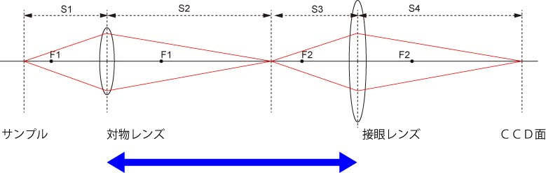
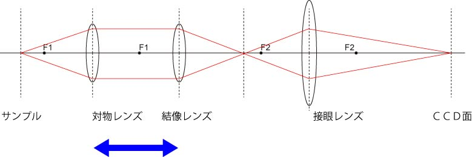

有限遠補正光学系と 無限遠補正光学系
さて，先に述べましたように，顕微鏡は，二つのレンズを使って，像を拡大する装置です．
顕微鏡システムには，
有限遠補正光学系
無限遠補正光学系
とがあり，最近の顕微鏡のほとんどは無限遠補正光学系です．
では，この二つの違いは何で，なぜ，最近は，無限遠補正光学系が多用されるようになったのでしょう？
これを説明するために，上記の図を単純化して，軸上から発せられる光の軌跡を追ってみましょう．

この光学系で重要なのが，青い矢印で描いた，
対物レンズと接眼レンズとの距離（S2+S3）が決まっている
です．
これが，有限遠補正光学系です．
これに対して，無限遠補正光学系は下図に示すように，

対物レンズで集光された光は対物レンズのみでは集光せず，平行光となる．
結像レンズを通して中間像を結ぶ．
光学系になっているのです．
これが両者の大きな違いです．
では，無限遠の特徴は何でしょう？
一つの大きな特長は，対物レンズから先の光は平行光なので，
青い矢印（対物レンズと結像レンズ）との距離を自由に取れる
点です．
つまり，対物レンズ後の光学系を自由に設計できるのです．
最近の光学顕微鏡は，蛍光顕微鏡がメインとなっていますので，その間にダイクロイックミラー，フィルター，などを多数入れる必要があります．
そのため，この間の距離に自由度があると，非常に設計が楽になります．
なーんだ，設計の自由度だけか，と思ったかも知れません．
しかし，次ページに示すように，像のクォリティを考えても，無限遠のメリットは大きいのです．